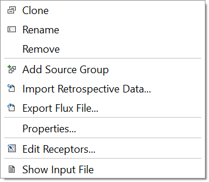
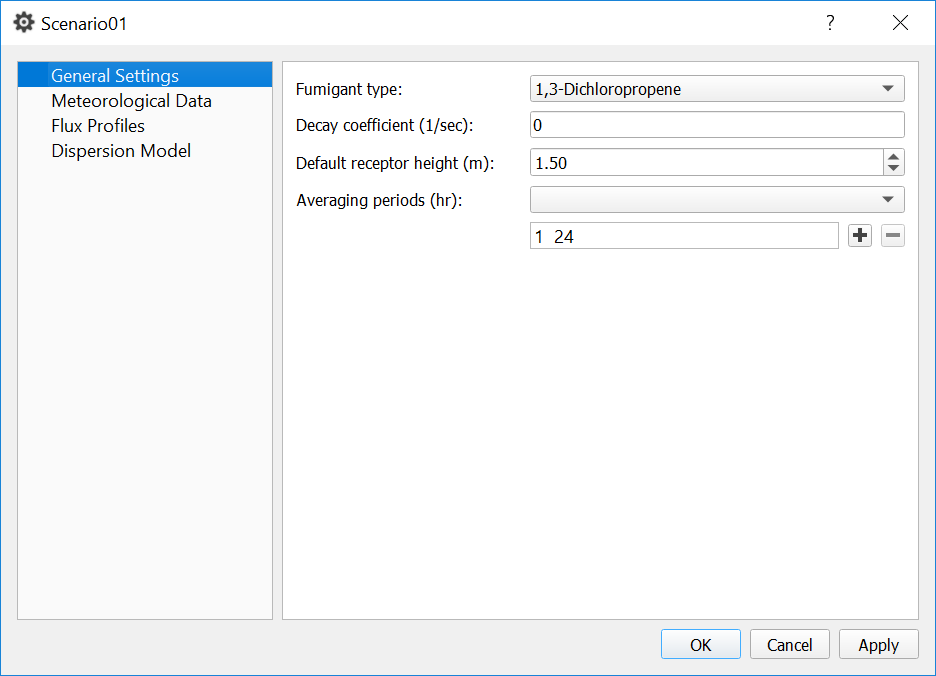
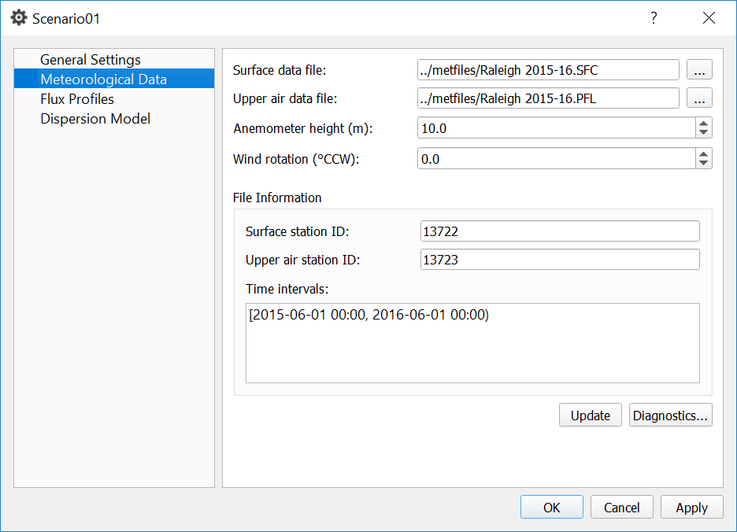
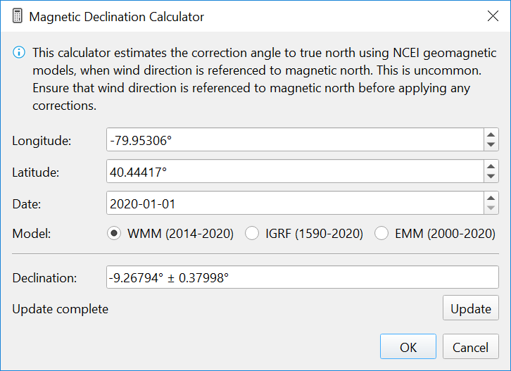
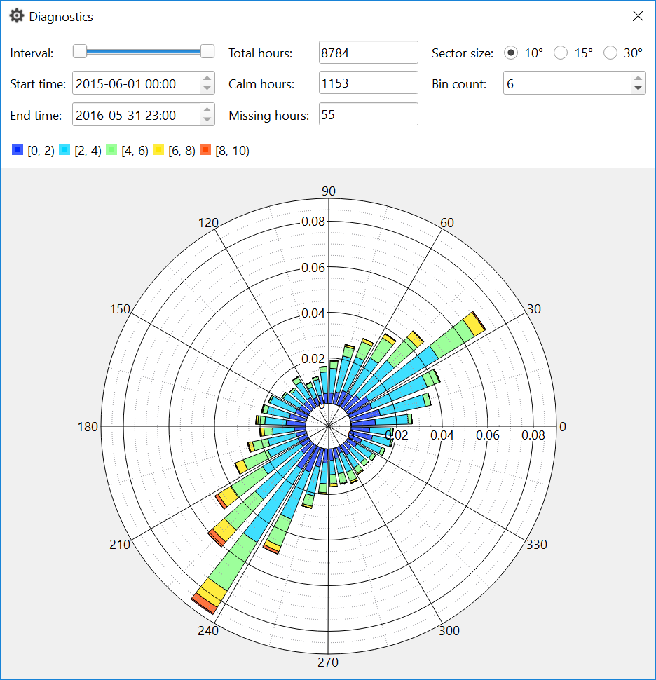
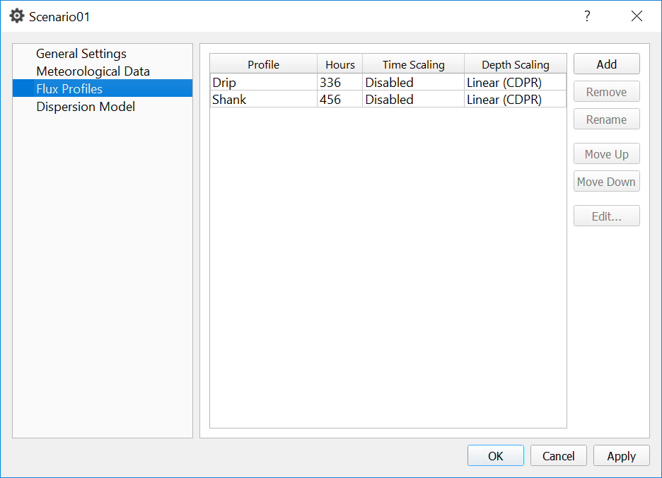
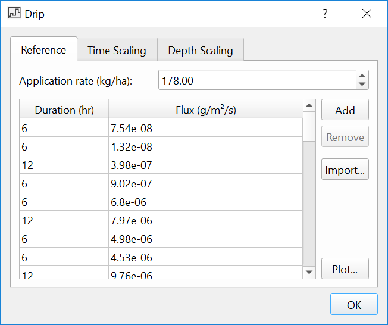
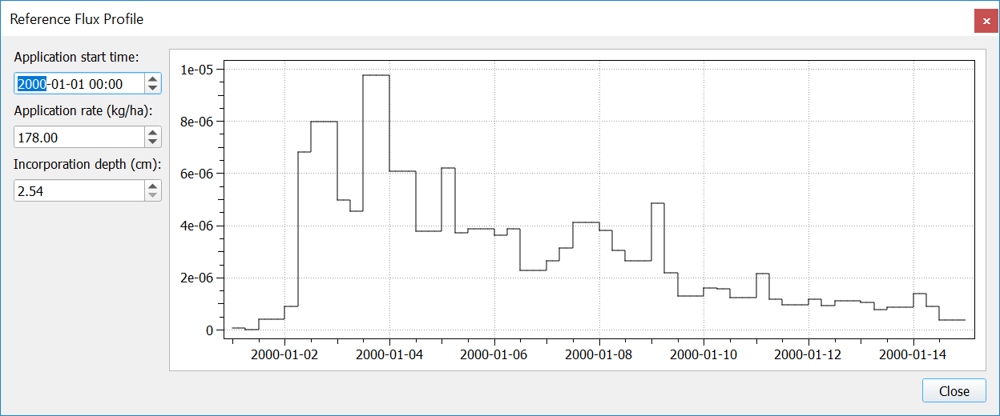
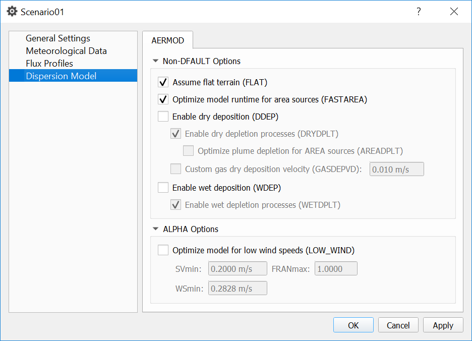

Creating Scenarios¶
The Scenario Context Menu is the central point for managing all actions related to a specific scenario. This menu is accessed by right-clicking a scenario in the Project Browser:
{kind=link}
- Clone
Creates a duplicate scenario in the same project.
- Rename
Changes the scenario name. Must contain only letters and numbers.
- Remove
Removes the scenario from the project.
- Add Source Group
Creates a new, empty source group.
- Import Retrospective Data
Creates a new source group by importing area sources from a CSV file. Sample CSV files are included in the examples directory of the application.
- Export Flux File
Exports the generated flux data to a new file in AERMOD
SO HOUREMISformat.- Properties
View and edit parameters for the scenario.
- Edit Receptors
Open the receptor editor.
- Show Input File
View the generated AERMOD input file.
General Settings¶
{kind=link}
A number of common fumigants are included in the fumigant type menu. This is for reference only; no physical/chemical or fate properties associated with these fumigants are populated within SOFEA.
A non-zero decay coefficient enables exponential decay calculations in AERMOD using the DCAYCOEF keyword. See the AERMOD documentation for more information.
Averaging period in hours can be any factor of 24. Any desired combination of averaging periods can be requested (e.g., 1 hour and 24 hours). Shorter averaging periods will produce larger output files and require additional post-processing time.
Meteorological Data¶
{kind=link}
AERMET format surface and upper air data files (*.SFC and *.PFL) are
required. After selecting the files and clicking Update, the files will be
checked for validity. Once updated, the surface station ID, upper air station
ID, and all contiguous time intervals in the surface file are shown in the
dialog box.
The anemometer height menu shows 10 m as a default value. Adjust the anemometer height as needed by typing in the desired value or using the up-down control.
The wind rotation value is set to zero by default and should be modified only if clear justification is provided. The calculator button opens a magnetic declination calculator which estimates the rotation angle to true north using NCEI Geomagnetic Models. This option should only be used if wind direction is referenced to magnetic north, which is uncommon.
{kind=link}
The Diagnostics button opens an interactive dialog with a wind rose and total/calm/missing hours metrics, updated in real-time as the slider is moved to change the time interval. Wind speed bins (color, intervals) and sector size can be customized.
{kind=link}
Flux Profiles¶
{kind=link}
One scenario may define multiple flux profiles, and flux profiles are assigned to individual sources manually or with probabilities defined at the source group level.
The Edit button opens a dialog to define the reference flux profile, and scaling settings based on the application start time and/or incorporation depth for a specific source.
{kind=link}
The Plot button displays an interactive plot of the flux profile. Editing the application start time, application rate, or incorporation depth will show the flux profile with scaling applied based on these specific parameters.
{kind=link}
Dispersion Model¶
{kind=link}
The Dispersion Model page is used to set specific control options for AERMOD. See the AERMOD documentation for more information on specific keywords.
A typical option used in SOFEA modeling is FASTAREA, which simplifies
calculations for receptors far from a source. This can significantly
reduce processing time in complex models.